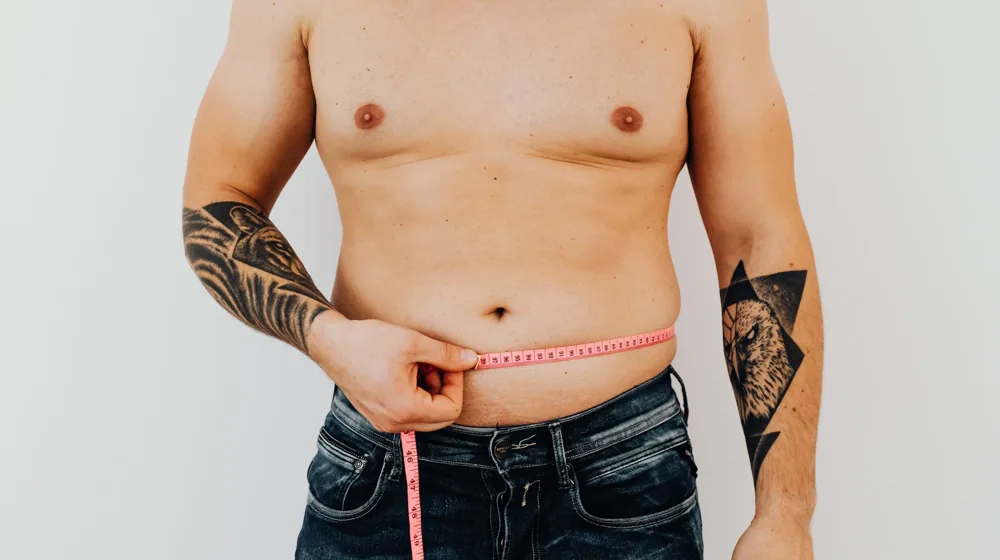

내 체지방률, 정확히 얼마일까? 계산법부터 정상 범위까지 한 번에
사진: Semanur Çoban / Pexels (무료 이미지, 출처 표기)
체지방률, 왜 중요할까요? 단순히 체중계 숫자만으로는 알 수 없는 내 몸의 진짜 건강 지표입니다. 정확한 체지방률을 알고 싶지만, 어디서부터 시작해야 할지 막막하셨나요? 이 글에서는 집에서 할 수 있는 간단한 계산법부터 전문가 수준의 측정 방법, 그리고 성별·연령별 정상 범위까지 자세히 알려드립니다.

체지방률은 전체 체중에서 체지방이 차지하는 비율을 뜻합니다. 단순히 몸무게가 적다고 해서 건강하다고 할 수 없는 이유가 여기에 있습니다. 근육량이 적고 체지방률이 높은 이른바 '마른 비만'도 건강 위험에 노출될 수 있기 때문입니다. 반대로 몸무게가 많이 나가도 근육량이 많고 체지방률이 낮으면 건강한 경우도 있습니다.
과도한 체지방은 고혈압, 당뇨, 심혈관 질환 등 다양한 만성 질환의 원인이 됩니다. 반대로 체지방이 너무 적어도 면역력 저하, 호르몬 불균형 등 건강 문제를 일으킬 수 있습니다. 따라서 자신의 체지방률을 파악하고 적정 수준을 유지하는 것이 건강 관리의 핵심입니다.
집에서 간단히 해보는 체지방률 계산법
병원이나 피트니스 센터에 가지 않고도 집에서 대략적인 체지방률을 추정할 수 있는 방법들이 있습니다. 물론 오차가 있을 수 있지만, 꾸준히 측정하여 변화를 확인하는 용도로는 유용합니다.
1. BMI(체질량지수)를 이용한 계산법
BMI는 체지방률이 아니지만, 체지방률과 연관성이 있어 추정치로 활용됩니다. 다음 공식은 성인을 위한 추정 공식입니다.
- 남성 체지방률(%) = (1.20 × BMI) + (0.23 × 나이) - 10.8 - 5.4
- 여성 체지방률(%) = (1.20 × BMI) + (0.23 × 나이) - 5.4
여기서 BMI는 체중(kg)을 키(m)의 제곱으로 나눈 값입니다. 예를 들어, 체중 65kg, 키 1.70m, 나이 30세 여성의 BMI는 65 / (1.70*1.70) = 약 22.49가 됩니다. 이를 공식에 대입하면 (1.20 × 22.49) + (0.23 × 30) - 5.4 = 약 26.98 + 6.9 - 5.4 = 28.48% 로 추정할 수 있습니다.
2. 줄자를 이용한 신체 둘레 측정법 (미해군 방식 등)
줄자를 이용한 방법은 특정 신체 부위의 둘레를 측정하여 체지방률을 추정하는 방식입니다. 미 해군 방식은 꽤 널리 알려져 있습니다.
- 남성: 목 둘레와 허리 둘레를 측정합니다.
- 여성: 목 둘레, 허리 둘레, 엉덩이 둘레를 측정합니다.
이 측정치들을 특정 공식에 대입하거나 온라인 계산기를 통해 체지방률을 추정할 수 있습니다. 예를 들어, 남성의 경우 허리 둘레와 목 둘레의 차이를 이용하고, 여성은 여기에 엉덩이 둘레를 추가하여 계산합니다. 이 방법은 개인별 신체 특징에 따라 오차가 클 수 있으므로 참고용으로 활용하는 것이 좋습니다.
정확한 측정을 위한 전문가 방식
좀 더 정밀하고 신뢰할 수 있는 체지방률 측정을 원한다면 전문가의 도움을 받는 것이 가장 좋습니다. 주로 병원이나 피트니스 센터에서 다음 방법들을 활용합니다.
1. BIA(생체 전기 저항 분석법)
가장 대중적인 측정 방식 중 하나로, 인바디(InBody) 등 체성분 분석기에 많이 사용됩니다. 몸에 미세한 전류를 흘려보내 각 조직의 전기 저항값을 측정하여 체수분량, 근육량, 체지방량 등을 추정합니다. 비교적 간편하고 빠르게 결과를 얻을 수 있으며, 가정용 스마트 체중계에도 이 기술이 적용된 제품들이 많습니다. 단, 측정 전 수분 섭취나 운동 여부에 따라 결과가 달라질 수 있습니다.
2. DEXA(이중 에너지 X선 흡수계측법)
현재까지 가장 정확하고 신뢰성 높은 체지방 측정 방법으로 알려져 있습니다. 특정 X선을 이용하여 뼈, 근육, 지방의 밀도를 각각 측정하여 신체 구성 성분을 정밀하게 분석합니다. 주로 병원에서 골밀도 검사와 함께 진행되며, 의료 목적으로 사용됩니다. 비용이 다소 높은 편입니다.
3. 수중 체지방 측정 (Hydrostatic Weighing)
수중에서 체중을 측정하여 체적을 구하고, 이를 이용해 신체 밀도를 계산하여 체지방률을 산출하는 방식입니다. 부력의 원리를 이용하며, 상당히 정확한 방법으로 알려져 있습니다. 하지만 측정 과정이 다소 복잡하고 장비가 필요하여 일반적이지는 않습니다.
성별·연령별 체지방률 정상 범위
체지방률의 '정상 범위'는 성별과 연령에 따라 차이가 있습니다. 일반적으로 알려진 건강 기준은 다음과 같으며, 특정 학회나 기관에 따라 기준이 약간 다를 수 있습니다. 대한비만학회 등 국내외 주요 건강 기관의 자료를 종합한 일반적인 수치입니다.
위 표는 일반적인 권장 기준이며, 개인의 건강 상태나 활동량 등에 따라 이상적인 체지방률은 달라질 수 있습니다. 정확한 건강 목표 설정은 의사 또는 전문 트레이너와 상담하는 것을 권장합니다.
체지방률 관리, 어떻게 해야 할까?
자신의 체지방률을 확인했다면, 이제 건강한 범위 내로 관리하는 것이 중요합니다. 단순히 체지방을 줄이는 것이 아니라, 근육량을 유지하거나 늘리면서 체지방을 감량하는 것이 핵심입니다.
- 균형 잡힌 식단: 과도한 탄수화물이나 지방 섭취를 줄이고, 단백질과 식이섬유를 충분히 섭취하는 것이 중요합니다. 가공식품보다는 자연식품 위주로 식단을 구성하고, 규칙적인 식사 시간을 지키세요.
- 꾸준한 운동: 유산소 운동은 체지방 감소에 효과적이며, 근력 운동은 근육량을 늘려 기초대사량을 높여줍니다. 주 3회 이상 꾸준히 운동하는 습관을 들이고, 유산소와 근력 운동을 병행하는 것이 이상적입니다.
- 충분한 수면: 수면 부족은 호르몬 불균형을 유발하여 식욕 증가와 체지방 축적에 영향을 줄 수 있습니다. 하루 7~8시간의 충분한 수면을 취하는 것이 중요합니다.
- 스트레스 관리: 스트레스는 코르티솔 호르몬 분비를 촉진하여 복부 지방 축적의 원인이 될 수 있습니다. 명상, 취미 활동 등을 통해 스트레스를 관리하는 것도 체지방 관리에 도움이 됩니다.
무리한 다이어트나 단기간의 급격한 체지방 감량은 요요 현상을 초래하기 쉽습니다. 지속 가능하고 건강한 생활 습관을 통해 장기적인 관점에서 체지방을 관리하는 것이 중요합니다.
체지방률 관련 자주 묻는 질문
Q1. 체지방률이 낮을수록 무조건 건강한가요?
아닙니다. 체지방이 지나치게 낮으면 면역력 저하, 호르몬 불균형, 생리 불순(여성의 경우), 골다공증 위험 증가 등 여러 건강 문제가 발생할 수 있습니다. 특히 여성은 남성보다 필수 체지방량이 높으므로, 건강한 범위 내에서 유지하는 것이 중요합니다.
Q2. 같은 몸무게인데 체지방률이 왜 다를까요?
같은 몸무게라도 근육량과 지방량의 구성 비율에 따라 체지방률이 크게 달라질 수 있습니다. 근육은 지방보다 밀도가 높고 부피가 작으므로, 근육량이 많은 사람은 같은 몸무게라도 더 탄탄해 보이고 체지방률은 낮을 수 있습니다. 반대로 지방량이 많은 사람은 체지방률이 높게 나타납니다.
Q3. 체지방률은 언제 측정하는 것이 가장 정확한가요?
가장 일관성 있는 측정을 위해서는 아침 공복 상태에서 화장실을 다녀온 후 측정하는 것이 좋습니다. 식사 후나 운동 후, 또는 충분한 수면을 취하지 못한 상태에서는 체수분량 등에 변화가 생겨 오차가 발생할 수 있습니다.
이 글에서 제공하는 정보는 일반적인 건강 지식을 바탕으로 하며, 개인의 정확한 건강 상태 진단 및 관리는 반드시 전문가(의사, 영양사, 트레이너 등)와 상담하시길 권장합니다. 특히 특정 질환을 앓고 있거나 약물을 복용 중인 경우 더욱 그러합니다.
🔗 이 글도 함께 보면 좋아요: AIG 여자오픈, 골프 팬들을 충격에 빠뜨린 의외의 반전 드라마! 그 승자는?
관련 추천 상품
인바디 체중계, 스마트 체중계, 가정용 체지방계 관련 인기 상품 보러가기
이 포스팅은 쿠팡 파트너스 활동의 일환으로, 이에 따른 일정액의 수수료를 제공받습니다.